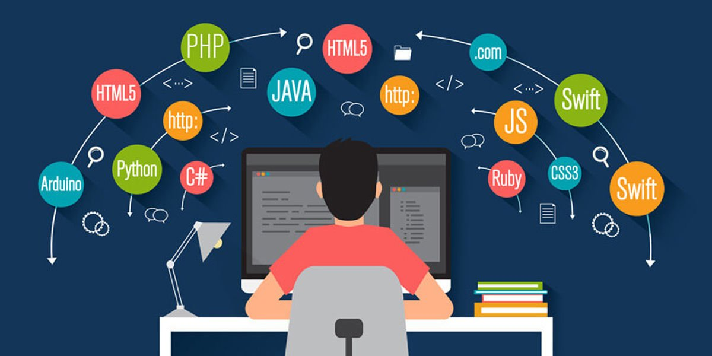

Programlama dili, yazılımcının bir algoritmayı ifade etmek amacıyla, bir bilgisayara ne yapmasını istediğini anlatmasının tektipleştirilmiş yoludur. Programlama dilleri, yazılımcının bilgisayara hangi veri üzerinde işlem yapacağını, verinin nasıl depolanıp iletileceğini, hangi koşullarda hangi işlemlerin yapılacağını tam olarak anlatmasını sağlar. Şu ana kadar 250'den fazla programlama dili geliştirilmiştir. Bunlardan bazıları Pascal, Basic, C, C#, C++, Java, JavaScript, Cobol, Perl, PHP, Python, Ada, Fortran, Delphi ve Swift'tir.
Python, nesne yönelimli, yorumlamalı, birimsel (modüler) ve etkileşimli yüksek seviyeli bir programlama dilidir.
Girintilere dayalı basit söz dizimi, dilin öğrenilmesini ve akılda kalmasını kolaylaştırır. Bu da ona söz diziminin ayrıntıları ile vakit yitirmeden programlama yapılmaya başlanabilen bir dil olma özelliği kazandırır.
Modüler yapısı, sınıf dizgesini (sistem) ve her türlü veri alanı girişini destekler. Hemen hemen her türlü platformda çalışabilir (Unix, Linux, Mac, Windows, Amiga, Symbian). Python ile sistem programlama, kullanıcı arabirimi programlama, ağ programlama, web programlama, uygulama ve veri tabanı yazılımı programlama gibi birçok alanda yazılım geliştirebilirsiniz. Büyük yazılımların hızlı bir şekilde prototiplerinin üretilmesi ve denenmesi gerektiği durumlarda da C ya da C++ gibi dillere tercih edilir.
Python 1980'lerin sonunda ABC programlama diline alternatif olarak tasarlanmıştı. Python 2.0, ilk kez 2000 yılında yayınlandı. 2008'de yayınlanan Python 3.0, dilin önceki versiyonuyla tam uyumlu değildir ve Python 2.x'te yazılan kodların Python 3.x'te çalışması için değiştirilmesi gerekmektedir. Python 2 versiyonun resmi geliştirilme süreci, dilin son sürümü olan Python 2.7.x serisi versiyonların ardından 1 Ocak 2020 itibarıyla resmi olarak sona erdi. Python 2.x geliştirilme desteğinin sona ermesinin ardından, Python dilinin 3.6.x ve sonraki sürümlerinin geliştirilmesi devam etmektedir.

PHP, Hypertext Preprocessor (Türkçe: Üstünyazı Önişlemcisi) (Aslen: Personal Home Page - Kişisel Ana Sayfa) , internet için üretilmiş, sunucu taraflı, çok geniş kullanımlı, genel amaçlı, içerisine HTML gömülebilen betik ve programlama dilidir[1]. İlk kez 1995 yılında Rasmus Lerdorf tarafından yaratılan PHP'nin geliştirilmesi bugün PHP topluluğu tarafından sürdürülmektedir. Ocak 2013 itibarıyla 244 milyondan fazla web sitesi PHP ile çalışırken 2.1 milyon web sunucusunda PHP kurulumu bulunmaktadır.
PHP kodları PHP işleme modülü bulunan bir web sunucusu tarafından yorumlanır ve çıktı olarak web sayfası üretilir. Bu kodlar veriyi işlemek üzere harici bir dosyaya kaydedilerek çağırılabildiği gibi doğrudan HTML kodunun içine de gömülebilir. PHP zaman içinde bir komut satırı arayüzü sunacak şekilde evrilmiştir, PHP-GTK yardımıyla grafiksel masaüstü uygulaması geliştirmek de mümkündür.
PHP özgür bir yazılım olup PHP Lisansı ile dağıtılmaktadır. Bu lisans kullanım şartları kısmında GNU Genel Kamu Lisansı ile örtüşmese de, PHP tüm web sunuculara ve hemen hemen tüm işletim sistemi ve platforma ücretsiz olarak yüklenebilir.
Javascript, (genellikle JS olarak kısaltılır), HTML ve CSS ile birlikte World Wide Web'in temel teknolojilerinden biri olan programlama dilidir. Web sitelerinin %97'sinden fazlası, web sayfası hareketleri için istemci tarafında JavaScript kullanırlar ve kullanılan kodlar genellikle üçüncü taraf kitaplıkları içerir. Tüm büyük web tarayıcılarında, kaynak kodunu kullanıcıların cihazlarında yürütebilmek için özel bir JavaScript motoru bulunur.
JavaScript, ECMAScript standardına uyan, genellikle eş zamanlı olarak derlenmiş, üst düzey bir dildir. Dinamik yazma, prototip tabanlı obje yönelimi ve birinci sınıf işlevlere sahiptir. Olay odaklı, işlevsel ve zorunlu programlama stillerini destekleyen çoklu paradigmadır . Metin, tarihler, düzenli ifadeler, standart veri yapıları ve Belge Obje Modeli (DOM) ile çalışmak için uygulama programlama arayüzlerine (API'ler) sahiptir.
ECMAScript standardı, ağ oluşturma, depolama veya grafik olanakları gibi herhangi bir giriş/çıkış (I/O) içermez. Pratikte, web tarayıcısı veya diğer çalıştırma ortamları, I/O için JavaScript API'leri sağlarlar.
JavaScript motorları başlangıçta yalnızca web tarayıcılarında kullanılıyordu, ancak günümüzde bazı sunucuların ve çeşitli uygulamaların da temel bileşenleridir. Bu kullanım için en popüler çalışma zamanı sistemi Node.js'dir .
Java ve JavaScript'in ad, sözdizimi ve ilgili standart kitaplıklar açısından benzerlikleri olsa da, iki dil birbirinden farklıdır ve tasarım açısından da büyük farklılıklar gösterir.